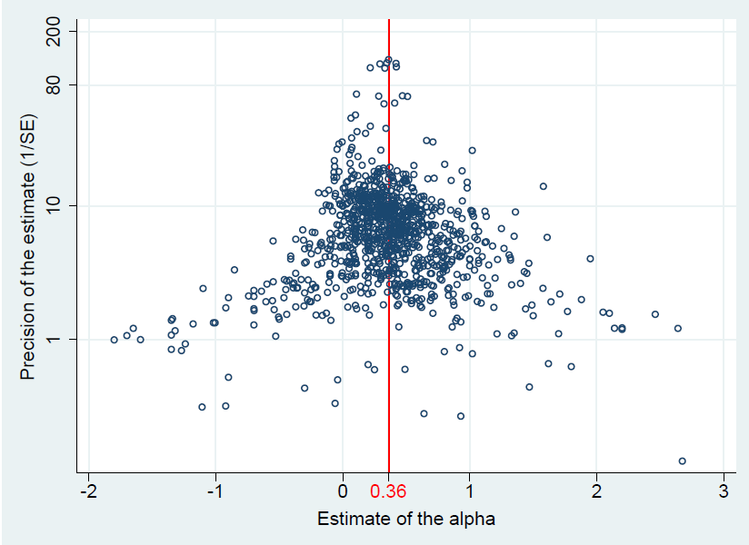

Abstract
We provide the first quantitative survey of the empirical literature on hedge fund performance. We examine the impact of potential biases on the reported results. Analyses in individual studies have been plagued by fragmentation of underlying data and by limited consensus on how hedge fund performance should be measured. Using a sample of 1,019 intercept terms from regressions of hedge fund returns on risk factors (the “alphas”) collected from 74 studies published between 2001 and 2021 we show that inferences about hedge fund returns are not significantly contaminated by publication selection bias. Most of our monthly alpha estimates adjusted for the (small) bias fall within a relatively narrow range of 30 to 40 basis points. Studies that explicitly control for the potential biases in the underlying data (e.g. the backfilling bias and the survivorship bias) report lower alphas. Our results demonstrate that despite the prevalence of the publication selection bias in numerous other research settings, publication may not be selective when there is no strong a priori theoretical prediction about the sign of estimated coefficients, which may induce greater readiness to publish statistically insignificant results.
Fig: No publication bias, mean alpha 0.36
Reference: Fan Yang, Tomas Havranek, Zuzana Irsova, and Jiri Novak (2024), "Is research on hedge fund performance published selectively? A quantitative survey." Journal of Economic Surveys 38(4): 1085-1131.